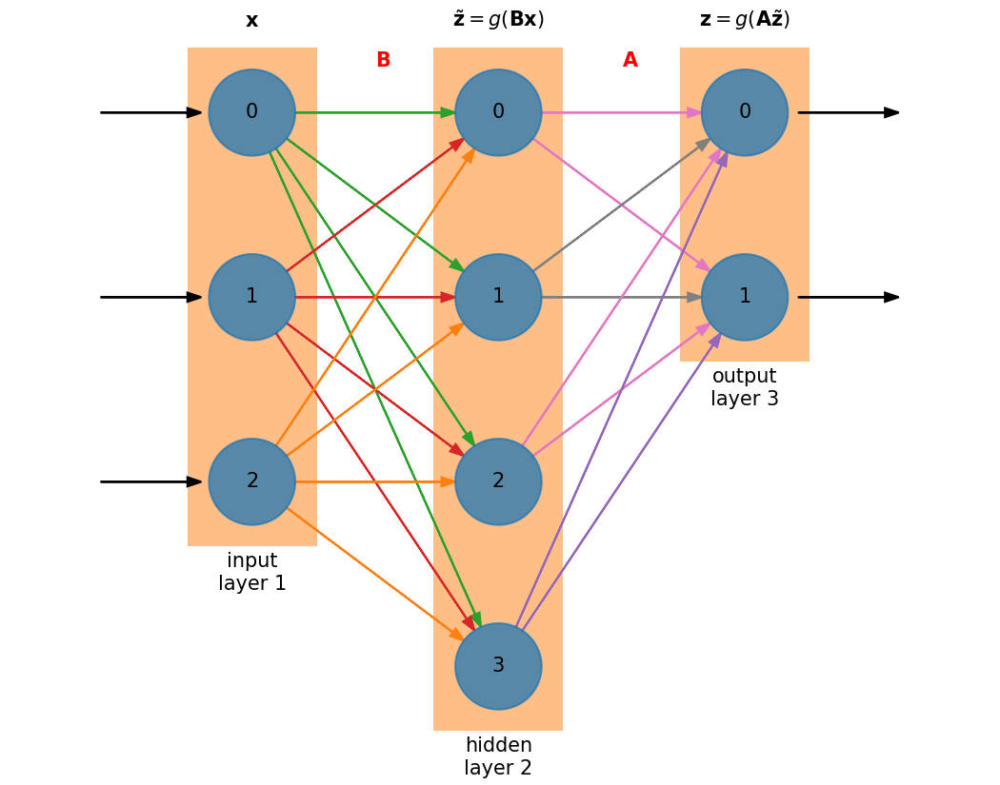

Hidden Layers#
We can get better performance from a neural network by adding a hidden layer:

The size of the hidden layer is independent of the size of the input and output layers. In this case, we have a hidden layer that is larger than either the input or output layers.
Now we have an additional matrix \({\bf B}\) to train. The matrix sizes are:
\({\bf A}\) : \(N_\mathrm{out} \times N_\mathrm{hidden}\)
\({\bf B}\) : \(N_\mathrm{hidden} \times N_\mathrm{in}\)
Nota
Neglecting the activation functions, the action of the network is to do \({\bf z} = {\bf A B x}\) which has size \(N_\mathrm{out}\).
The derivation of the corrections to matrices \({\bf A}\) and \({\bf B}\) can be done via the chain rule.
Nota
We’ll consider the case of a single hidden layer, but the derivation we do here generalizes to multiple hidden layers.
Note that we are assuming here that the same activation function, \(g(\xi)\) is used on each layer.
Updates to \({\bf A}\)#
Matrix \({\bf A}\) is trained based on the output layer, we know the error there directly, \({\bf e}^k = {\bf z} - {\bf y}^k\). As a result, we can just use the result that we got for a single layer, but now the input is \(\tilde{\bf z}\) instead of \({\bf x}\):
Updates to \({\bf B}\)#
To find the corrections to matrix \({\bf B}\), we essentially need to know what the error is on the hidden layer. But we only know the error on the output layer, so by applying the chainrule on our cost function, we will work out this correction, and in the process see how the error on the output layer informs the error on the hidden layer—a process called backpropagation.
Let’s start with our cost function:
Differentiating with respect to an element in matrix \({\bf B}\), we apply the chain rule over and over, giving:
Now we have 3 derivatives left, which are straightforward:
Inserting these dervatives and using the \(\delta\)’s, we are left with:
Now, that remaining sum is contracting on the first of the indices of the matrix \({\bf A}\), indicating a matrix vector product involving \({\bf A}^\intercal\). This allows us to define the error backpropagated to the hidden layer:
and we can write
Notice the symmetry in the update of each matrix:
Adding additional hidden layers would continue the trend, with each hidden layer’s matrix update depending on the error backpropagated to that layer.